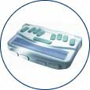

Index
This list of products is for reference purposes only and does not reflect endorsement by the IDRC.
Description
Personal Digital Assistants (PDAs) are portable computers that are designed to act as organizers, note takers and/or communication devices. Due to the small physical size of these devices they often possess the latest and most compact user interfaces such as touch screens, hand writing recognition, or miniature keyboards [both on-screen and attached to the device]. There are also a group of PDAs that are designed to be used by users with disabilities. These PDAs use aural output, Braille displays and Braille keyboards to comprise their user interface. This page focuses on proprietary accessibility devices, particularly those for the blind. For more information on accessibility on mainstream PDA devices, we have a separate page: Display-Based Personal Digital Assistants
Points to ponder - Questions to consider when shopping for a personal data assistant
- Does it have expandable memory?
- Is there add-on software available for it?
- Do you require multi-language support?
- Do you require a Braille output option?
- Do you require a one-handed option?
Note Takers for People with Visual Disabilities
Most of these devices have Braille input or output. There are some generic note takers like the Alpha Smart that can be used by people who do not have visual disabilities. Some portable note takers may act as refreshable Braille displays for a computer system.
- Freedom Scientific Blind, has the PACmate series to support portable notetaking needs:
- These products have features such as calendars, scientific calculators, multilingual support, word processing, address book, some have Internet capabilities, can be connected to Braille embosser or printer, and have accessories like external disk drives to transfer data to your desktop PC
- Discontinued models of notetaking devices manufactured by Freedom Scientific (such as the Type Lite and Braille Lite) may be purchased from their Factory Reconditioned centre
- For more information e-mail This email address is being protected from spambots. You need JavaScript enabled to view it.
- Artic Technologies has the following Braille note takers:
- Ergo Braille - web page says it is the smallest Braille computer device - Grade 2 Braille input and synthesized speech output
- Braille Pad - slightly larger than the Ergo Braille but it has additional style keys - also Grade 2 Braille input and synthesized speech output
- Braille Desk 2000 - again, slightly larger than the Braille Pad because it has a numeric keypad - also Grade 2 Braille input and synthesized speech output
- The BrailleNote Product line by HumanWare: features include
- Bluetooth and WiFi, e-mail, web browsing and online help
- Wordprocessing and personal organizing features
- Media Player and Visual Display for video connection in real-time.
- Book Reader - E-Books in Standard Braille (in any grade Braille)
- ActiveSync for syncing info with your PC.
- The PacMate by FreedomScientific - offers both QWERTY and Braille input, and output via synthesized speech and/or Braille.
Electronic Dictionaries
These dictionaries were chosen because they have speech output. This means that not only can they be used by people with visual disabilities, but also by people with learning disabilities or people who are aural learners.
- Franklin Speaking Language "Master" by Franklin Electronic Publishers
- Franklin makes portable spellcheckers, grammar checkers, thesauruses, and dictionaries. These devices are useful to individuals with learning or visual disabilities, due to its visual and auditory output. Franklin products are also useful for children, as it contains a variety of educational games which develop spelling, typing, and word identification skills.
- Other Franklin products include: Homework Wiz, Speaking Homework Wiz
- Language Teacher from Ectaco
- Talk to your classmates via the infrared port - includes my first diary, my first organizer and scheduler plus learning games - wide variety of languages and dictionaries
- Miriam Webster Speaking Dictionary - definitions, thesaurus, learn a word, games and crossword puzzles
Personal Organizers
There are many personal organizers on the market. These two products have synthesized speech support.
- "Voice Diary" from Voice Diary Ltd
- Voice Diary includes a calculator, appointment calendar, memo pad, daily to do list, address book
- It is hand held, about the size of a glasses case
E-Text Readers
These devices allow you to take print material and access it either through synthesized speech or in an audio format. they are not technically the "eBooks" we have all heard about.
- There are three versions of the product with different features and price ranges
- The eBooks for Download site supports eBookMan, Palm OS and Windows CE
- The following information is from the Franklin web site and is for the lower priced model of the eBookMan:
- Download books to read or listen to audio books - thousands of titles available now
- Large display for a great reading experience
- Download and enjoy your favorite music (supports MP3)
- Organize with Date Book, Address Book, To-Do Book
- 8MB RAM with MultiMediaCard expansion slot for additional memory
- Synchronize with MS Outlook 2000 using Intellisyncô technology
- Record and Playback voice memos
- Built-in Microphone, Speaker, and Headphone Jack
- Take notes in your own handwriting or use pop-up keyboard
- Includes protective cover, stylus, and USB connection (serial cradle sold separately)
- Weighs 14 oz., is a portable Braille reading device and walkman, runs for more than 20 hours on batteries, has 8 cell display, for reading eText, has only 4 keys